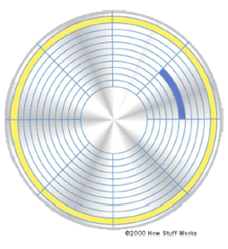

Als we de figuur bekijken, dan zien we dat de buitenste tracks een grotere sectorlengte beslaan dan de binnenste. Zoals je zopas hebt gelezen heeft een sector echter een vaste lengte van bijvoorbeeld 512 bytes. Een sector aan de buitenkant van de platter mag dus enkel evenveel bytes bevatten dan een sector in de binnenkant van de platter.
Dit betekent dat er heel wat opslagruimte verloren gaat.
Daarnaast is het zo dat de bits in de binnenste sectoren heel dicht tegen elkaar staan en in de buitenste sectoren evenredig gespreid. Dit zorgt ervoor dat de lees- en schrijfsnelheid zowel aan de binnenkant als buitenkant van de sectoren gelijk is.
Bovenstaand principe is het Cylinder Head Sector (CHS) adressering systeem. Het wordt nu niet meer gebruikt en is vervangen door Zone Bit Recording (ZBR).